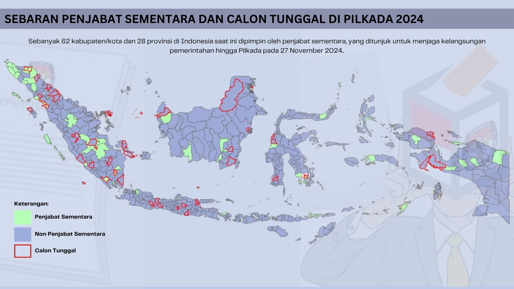

Sebaran Penjabat Sementara dan Calon Tunggal pada Pilkada Tahun 2024
Sebanyak 62 kabupaten/kota dan 28 provinsi di Indonesia saat ini dipimpin oleh penjabat sementara, yang ditunjuk untuk menjaga kelangsungan pemerintahan hingga Pilkada pada 27 November 2024.

Terdapat 62 kabupaten/kota dan 28 provinsi di Indonesia yang dipimpin oleh penjabat sementara saat ini. Penjabat sementara ialah penjabat yang ditugaskan untuk memimpin daerah ketika masa jabatan kepala daerah sebelumnya telah berakhir, sebelum pemilihan ulang diadakan. Penunjukan penjabat sementara ini diatur oleh pemerintah pusat untuk memastikan bahwa pemerintahan daerah tetap berjalan dengan baik meskipun belum ada kepala daerah yang definitif. Penjabat sementara biasanya berasal dari kalangan birokrasi yang dinilai mampu menjaga stabilitas daerah dan melanjutkan program-program pemerintahan yang sedang berjalan. Di atas ini adalah peta sebaran dari penjabat sementara di Indonesia tahun 2024. Terlihat bahwa penjabat sementara mendominasi di Pulau Sumatera kemudian disusul oleh Papua.
Masa jabatan dari penjabat sementara ini akan berakhir dikarenakan dalam waktu dekat, tepatnya 27 November, akan diadakan Pilkada. Salah satu fenomena menarik dari Pilkada tahun ini adalah kehadiran calon tunggal di beberapa daerah. Tercatat, sebanyak 41 daerah yang terdiri atas 35 kabupaten, 5 kota, dan 1 provinsi menghadapi situasi tersebut. Kondisi ini bukanlah hal baru dalam Pilkada di Indonesia. Pemerintah telah menetapkan aturan khusus untuk mengatur fenomena calon tunggal melalui Undang-Undang Nomor 10 Tahun 2016 tentang Pilkada. Dalam UU tersebut, disebutkan bahwa jika hanya ada satu pasangan calon yang mendaftar, maka lawan yang akan dihadapi dalam pemilihan adalah kotak kosong. Sebaran wilayah yang memiliki calon tunggal tertera pada peta. Terlihat bahwa fenomena calon tunggal ini tersebar hampir di seluruh pulau besar, baik Sumatera, Jawa, Kalimantan, Sulawesi, hingga Papua.
Kedua fenomena ini, yakni calon tunggal dan penjabat sementara, tidak akan menjadi masalah jika terjadi pada wilayah yang berbeda. Namun, ketika keduanya terjadi di wilayah yang sama, kekhawatiran muncul. Jika "kotak kosong" memenangkan Pilkada, maka penjabat sementara kemungkinan besar akan terus memimpin daerah tersebut hingga Pilkada ulang diadakan. Situasi ini terjadi karena tidak ada pasangan calon yang terpilih secara sah, sehingga pemerintah pusat harus memperpanjang masa tugas penjabat sementara demi menjaga kelangsungan pemerintahan. Akibatnya, kekosongan kepemimpinan definitif dapat berlarut-larut, yang berpotensi mempengaruhi stabilitas dan arah kebijakan daerah hingga Pilkada selanjutnya.